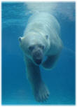
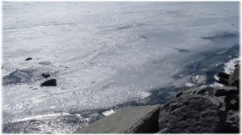
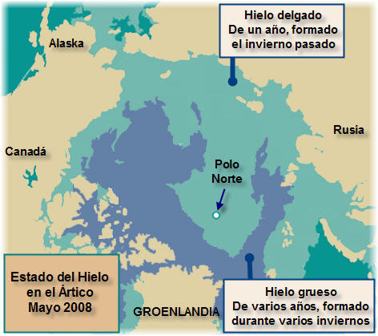

El Polo Norte sin hielo
No hace mucho escuché acerca del derretimiento de los polos, una evidente consecuencia del aumento de temperatura global.
Aparte de la elevación del nivel del mar y otros efectos aún impredecibles, otro efecto sería que ya no se harían expediciones al Polo Norte a pie, o en trineo, etcétera, sino que ahora se harían en barco.
La idea de un Polo Norte sin hielo, es algo a lo que habrá que acostumbrarse (Santa Claus tendrá que mudarse en la imaginación colectiva, sugiero el Polo Sur, es más frío y ahí hay tierra firme). Pero si hemos de acostumbrarnos, tendrá que ser más rápido de lo que esperamos, porque tal vez ocurra este mismo año.
Desde que se empezó a hablar del calentamiento global, se mencionó que de seguir el descongelamiento del Ártico, llegaría el día en que sería un mar y no un casquete congelado. Se dijo que tal descongelamiento ocurriría en el 2080 (año 2002), luego se dijo que en el 2050 (abril 2007) y por último, que en el 2013 (diciembre del 2007) ya se podría llegar en bote al lugar más septentrional del planeta. (Los enlaces anteriores son en inglés).
Ahora resulta que existen posibilidades de que ocurra este mismo año.
{kind=link}
De acuerdo a Sheldon Drobot de la Universidad de Colorado, y a Mark Serreze del Centro de Datos Nacional de Nieve y Hielo, se proyecta que este año se derrita el hielo en el Polo Norte, por primera vez en la historia humana.
El derretimiento sería algo simbólico, pero en términos de impacto psicológico, será un evento muy importante, y de acuerdo a las notas de prensa, tiene probabilidades del 50% de pasar este año.
Esta situación se debe a que el hielo del Polo cada vez es más delgado, y una gran área solamente tiene un año de edad, lo que lo hace más vulnerable al derretimiento normal que se produce cada verano en el Ártico.
Con esto, una posibilidad que se abre es que yacimientos de petróleo y de minerales, hasta ahora inaccesibles por el hielo, puedan empezarse a explotar.
A continuación un diagrama (adaptado por mí, con información de la NSIDC) que muestra la extensión de hielo actual en el Polo Norte, marcando el área cubierta con hielo grueso y de varios años, y el área de hielo delgado de un solo año de edad.

Lectura inicial: The independent: Exclusive: No ice at the North Pole
Traducción: La Jornada: El Polo Norte se quedaría sin hielo este verano, alertan expertos de EU
Fuente original con información adicional: NSIDC: Artic Sea News & Analysis
Metadatos y acciones
 Temas: ciencia, clima, tierra ⋅
Para guardar: Enlace permanente a esta anotación.
Temas: ciencia, clima, tierra ⋅
Para guardar: Enlace permanente a esta anotación.
 Print This Post
Print This Post
Comentarios
Los comentarios están cerrados.
Categorías
Últimas 4 anotaciones
Últimas anotaciones en cada categoría

Divulgación
El dinero no fomenta la creatividad: Daniel Pink en TEDGlobal 2009

Inspiración
Los 30 no son los nuevos 20

Noticias
Ver tu mente en tiempo real: Christopher deCharms en TED 2008
![Música en la era digital [Animación]](../../../wp-content/themes/tma/images/featured/animation_04_2009_featured.jpg)
Ocio
Música en la era digital [Animación]
junio 30, 2008, 11:17 am
Todo esto es producto de nosotros mismo los humanos, tanto quimico hemos contaminado elplaneta, pero lo mas que todo es biblico ya que son principios de dolores y que la venida de nuestro Señor Jesucristo esta serca que es lo mas probable, solamente èl sabra que viene despues que se descongele por completo, que èl nos ayude para poder sobrevivir y creò que es tiempo de buscarlos que otra señal vamos a esperar para que creamos en èl, busquemoslo mientras tengamos vida Jesus te ama y muriò por toda la humanidad, por los cientificos, en fin por el mundo entero. Saludos Dios les bendiga
junio 30, 2008, 2:19 pm
Todo lo que esta sucediendo es algo grabe en lo que nos tenemos que procupar. nosotros vivimos en bariloche, estamos a 30 de JUNIO y no vimos nieve.claro que en la cumbre del cerro catedral solo hay unos centimetros. hay q tomar conciencia yo quiero vivir mucho tiempo mas tengo 15 y quiero llegar a los 80 pero a este paso no creo que los de mi edad lleguen. gracias Felipe y Fede
septiembre 25, 2008, 10:34 am
ES TAN TRIZTE SABER QUE POR LA INCONCIENCIA DEL HOMBRE ALGO TAN HERMOSO COMO LO SON LOS POLOS SE DERRITIRAN Y NO HAY MARCHA ATRAS. SO POR LO MENOS HUBIERA PREOCUPACION,QUE SE REFLEXIONE LO QUE EN VERDAD ESTA SUCEDIENDO.PERO COMO A TODO EL MUNDO LE DA IGUAL Y LAS GRANDES POTENCIAS DEL MUNDO NO SE MANIFIESTAS SOLO PALABREO Y NADA DE HECHOS.ACASO NO ES TAN LINDA ESTA VIDA COMO PARA DEJAR QUE COSAS COMO ESTAS SUCEDAN POR FAVOR BASTA DE CONTAMINAR PAREN CON ESTA BOMBA DE TIEMPO QUE CADA VEZ QUEDA MENOS TIEMPO Y SE ACERCA EL DIA DEL FIN…Y HAY SI HABRAN ARREPENTIMIENTOS Y BUSCARAN LA MANERA DE SOBREVIVIR Y ENMENDAR SU HERROR PERO VA SER DEMESIADO TARDE GRACIAS A TODOS. julian
septiembre 27, 2008, 10:40 pm
Desde que se escribio la Biblia, ya se habia dado una profecia sobre este tema, los exhorto a leer Mateo 23 y este es solo el principio, pues van a venir fenómenos naturales en el mar, que van a causar panico mundial…..CRISTO VIENE PRONTO…..
noviembre 6, 2008, 4:23 pm
No puedo creerlo, ahora que se derrite el Polo Norte, van a aprovecharlo para sacar más petróleo!!!, eso se escucha muy suicida, quiere decir más combustible, más calentamiento global, ya es hora más que nunca, de utilizar energía renovable necesitamos el cambio YA!!!
noviembre 12, 2008, 9:55 am
lo mas doloroso es ver que los seres mas inosentes de estas especies esten sufriendo la destruccion del hombre ojala no se tan terrible aunque se sabe que en la biblia esta predecido pero solo nos queda la esperansa de el. amigos cracias por leer soy alguien que ve la realidad de lo que esta pasando como joven les digo k tratemos de asercase a el
enero 25, 2009, 3:45 pm
ya ni la friegan es muy triste esto qwue pasa y todo por la culpa de estados unidos ya que no quiren contribuir en la lucha del calentamiento global
febrero 2, 2009, 2:30 pm
NO SE CUANDO SE VALLA A DESCONGELAR
febrero 4, 2009, 10:34 pm
Es una pena por lo que pasa por el calentamiento global y el lado bueno es que el polo sur cada vez crece un poco mas, las temperaturas cada vez son mas altas, en 1920en el polo sur en verano hacían -80c a -60c pero ahora en verano 2009 estan haciendo -40c a -20c significa que si segimos con la contaminacion en 20 o 50 años mas en polo sur (verano) van a hacer de -1c a 10c y con esa temperatura no alcanza para mantener el hielo. Mientras que el polo norte ya no va a existir y en el resto del mundo las temperaturas maximas en verano podrian desde 70c a 80c y en invierno las temperaturas maximas pueden ser de 30c la capa de ozono se rompe y en ese tiempo ya a ser imposible salir sin protector solar.
marzo 2, 2009, 11:09 pm
que cosa con lo de los polos puras tonterias no va a pasar nada
marzo 25, 2009, 11:08 pm
el polo no existe porque nestro planeta es HUECA hueco y la nasa lo sabes muy bien{
.
septiembre 23, 2009, 11:51 pm
Esto va para , Alkatani Migabdi, aa pero como es posible que sigas viviendo en le siglo II, Ó III por Dios, la ignorancia del hombre hasta donde puede llegar, en la actualidad existe tanta información al respecto para eso existe gente que se dedica a estudiar sobre el comportamiento de nuestro planeta. ahi gente que no se conforma y quiere saber cada día mas y mas sobre lo que acontese a nuestro planeta. y sobre como salvarlo, como explicas a que exista volcanes, ciclones, terremotos, a que existan cuatro estaciones del año. IGNORANTE.!!!!!
octubre 16, 2009, 6:56 pm
ME DUELE EN EL ALMA LO QUE ESTA PASANDO,LO QUE MAS BRONCA ME DA, QUE LAS GRANDES POTENCIA QUE PRODUSEN ESTO NO VAN A SUFRIR TANTO COMO LOS PAISES MAS POBRES QUE SON LOS QUE NO CONTAMINAN,EL PODER SIEMPRE DE LA MANO DE LA INJUSTICIA,ESPERO QUE YA ESTEN PENSANDO EN PARAR ESTO YAAA!!! VA PARA CHINA,ESTADOS UNIDO,JAPON,COREA,INGLATERRA ETC ETC…
octubre 21, 2009, 1:51 pm
Quisiera que me enviaran toda la informacion sobre el descongelamiento del polo norte graficas, estudios,fotos y demas que haya disponble del tema
Muchas Gracias
octubre 22, 2009, 4:05 pm
es dificil comprender como el mismo hombre acaba con su propia habitad tan grande como es el ´planeta tierra pero tan pequeño a la vez que lo podemos comparar con el patio de nuestras casas ke no creamos conciencia de lo ke estamos ocacionando sin pensar ke el daño no es para futuras generaciones si no para nuestro presente y nuestro oscuro futuro. ojala y seamos concientes del gran crimen ambiental ke cada segundo cometemos. por favor es hora de reaccionar ama tu casa ama la tierra nuestra. casa la casa de todos.
noviembre 9, 2009, 6:36 pm
oigan…………………….. ………………chicos …………mandemen…………………….. mas imformacion sobre el derritimiento de los polos
octubre 17, 2010, 12:47 pm
Aqui es donde comienza la verdadera guerra fria
diciembre 2, 2012, 12:47 pm
abril 1, 2013, 12:22 pm
El sol cada 24.000 años termina su órbita al rededor de Alcyon en las pleyades, (lo acaba de terminar este 21 de diciembre del año 2012) ahora empieza una nueva era solar y por eso 40% del Polo Norte se ha derretido en solamente 33 años; el Homo Sapiens no ha causado eso, lo ha hecho el sol, y lo volverá a hacer cada 24.000 años.
Infórmense un poco más antes de culpar a algo tan insignificante cómo la raza humana.